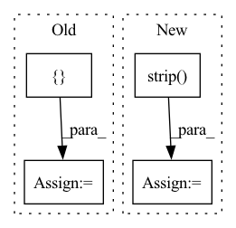

Pattern ID :32826
Before Change
print("Endpoint deployed in local mode")
dummy_inputs = {
"bucket_name": "aws-ml-blog",
"object_name": "artifacts/tensorflow-script-mode-local-model-inference/instances.json"
}
predictions = predictor.predict(dummy_inputs)
print("predictions: {}".format(predictions))
After Change
print("Endpoint deployed in local mode")
with open("instances.json", "r") as f:
payload = f.read().strip()
predictions = predictor.predict(payload)
print("predictions: {}".format(predictions))
In pattern: SUPERPATTERN
Frequency: 3
Non-data size: 4
Instances Fragment ID: 95184168
Project Name: aws-samples/amazon-sagemaker-local-mode
Commit Name: 1f1748e6ebded35f8e473390ab0c7a99e3565dca
Time: 2022-06-20
Author: eitan.sela@gmail.com
File Name: tensorflow_script_mode_local_model_inference/tensorflow_script_mode_local_model_inference.py
M Class Name: AnonimousClass
N Class Name: AnonimousClass
M Method Name: main(0)
N Method Name: main(0)
M Parent Class:
N Parent Class:
M File Name: tensorflow_script_mode_local_model_inference/tensorflow_script_mode_local_model_inference.py
N File Name: tensorflow_script_mode_local_model_inference/tensorflow_script_mode_local_model_inference.py
M Start Line: 47
M End Line: 50
N Start Line: 47
N End Line: 50
Before Change
df = pd.read_feather(os.path.join(data_dir, "labels_%s" % type, "labels_train.feather"))
X_tr, Y_tr, X_te, Y_te = [], [], [], []
label_map = {}
for idx, row in df.iterrows():
X_tr.append(os.path.join(data_dir, "domain_net-real_%s" % type, "train", row[0]))
if row[1] not in label_map:After Change
X_tr.append(os.path.join(data_dir, name))
Y_tr.append(int(label))
with open(os.path.join(data_dir, "real_test.txt"), "r") as f :
for item in f.readlines():
feilds = item.strip()
name, label = feilds.split(" ")
X_te.append(os.path.join(data_dir, name))
Y_te.append(int(label))
Fragment ID: 95184169
Project Name: aminparvaneh/alpha_mix_active_learning
Commit Name: 0ad26d7f57b6b591c8feca0cafb17f63b2756306
Time: 2022-06-27
Author: amin.parvaneh@gmail.com
File Name: dataset.py
M Class Name: AnonimousClass
N Class Name: AnonimousClass
M Method Name: get_DomainNet_Real(1)
N Method Name: get_DomainNet_Real(2)
M Parent Class:
N Parent Class:
M File Name: dataset.py
N File Name: dataset.py
M Start Line: 193
M End Line: 214
N Start Line: 182
N End Line: 201
Before Change
truncation=True
) // label token 转 id
mask_labels = mask_labels["input_ids"][1:-1] // 丢掉[CLS]和[SEP]
PAD_TOKEN_ID = tokenizer.convert_tokens_to_ids([ "[PAD]"After Change
if train_mode:
label, content = example.strip().split("\t")
else:
content = example.strip()
encoded_inputs = tokenizer(
text=content,
truncation=True, Fragment ID: 95184164
Project Name: harderthenharder/transformers_tasks
Commit Name: bf825bb22c43795f1e3a08cf8969ddc613051e76
Time: 2022-11-30
Author: pankeyu@pankeyus-MacBook-Pro.local
File Name: prompt_tasks/p-tuning/utils.py
M Class Name: AnonimousClass
N Class Name: AnonimousClass
M Method Name: convert_example(7)
N Method Name: convert_example(5)
M Parent Class:
N Parent Class:
M File Name: prompt_tasks/p-tuning/utils.py
N File Name: prompt_tasks/p-tuning/utils.py
M Start Line: 67
M End Line: 111
N Start Line: 37
N End Line: 124